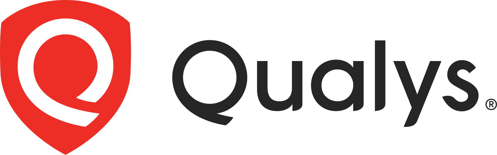
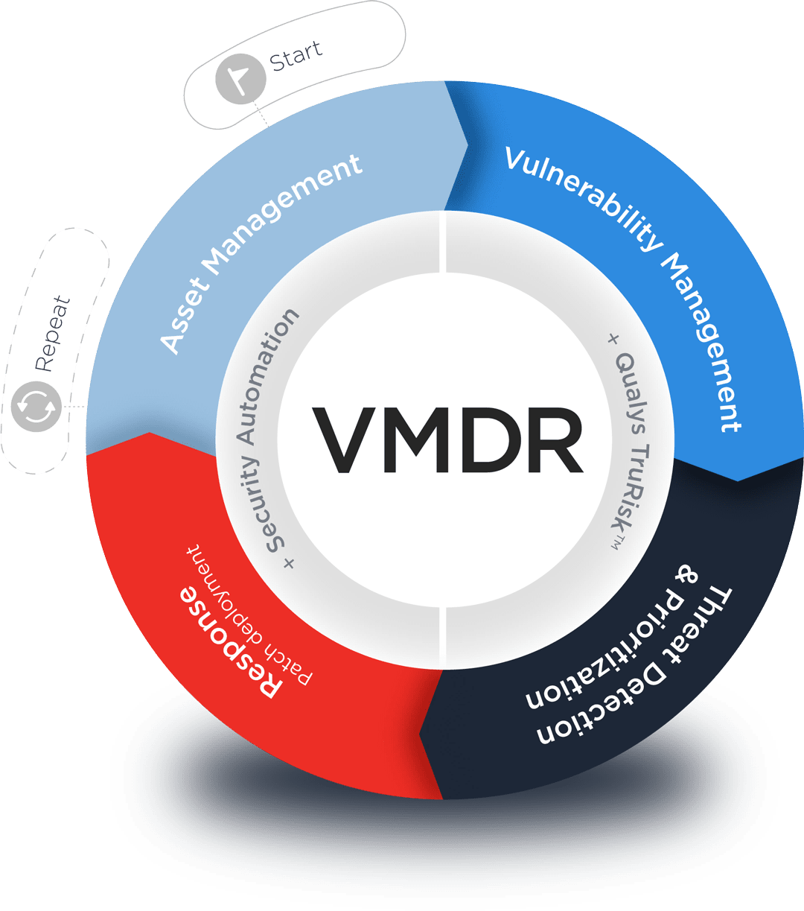

GMS · Enterprise Cybersecurity
Qualys Cloud Platform
Marco ejecutivo para visibilidad continua, gestión de exposición y remediación priorizada.

Enterprise Security BriefingGMS · Enterprise Cybersecurity
Marco ejecutivo para visibilidad continua, gestión de exposición y remediación priorizada.
Ruta de la conversación
Secuencia preparada para una narrativa técnico-ejecutiva de preventa.
El fabricante
Pionero del modelo Security-as-a-Service desde 1999, con una plataforma unificada para descubrir, priorizar y reducir la exposición digital.
Fundado en 1999, pionero de Security-as-a-Service.
Presencia global para organizaciones de todos los sectores.
Organizaciones protegidas con una plataforma cloud unificada.
Confianza demostrada entre las empresas más relevantes del mundo.
Problema
Los equipos de seguridad suelen operar con inventarios incompletos, herramientas desconectadas y miles de hallazgos sin una priorización que refleje la exposición real al negocio.
Entornos cloud, endpoints, aplicaciones y APIs cambian constantemente; lo que no se descubre ni inventaría no puede protegerse.
La severidad técnica por sí sola no identifica qué vulnerabilidades representan mayor exposición, explotación probable o impacto operativo.
Equipos y procesos aislados ralentizan la asignación, corrección y verificación, elevando el MTTR y la superficie de ataque.
Solución
Qualys centraliza descubrimiento, inventario, evaluación, priorización y remediación en una única plataforma cloud. Así, seguridad, infraestructura y desarrollo trabajan sobre la misma visión del riesgo y pueden actuar con rapidez.
Descubre y clasifica activos, aplicaciones, APIs y cargas cloud para mantener un inventario confiable y una cobertura continua de la superficie de ataque.
Correlaciona vulnerabilidades con criticidad del activo, amenazas, exposición y contexto de negocio para concentrar recursos en los hallazgos que más importan.
Orquesta asignación y remediación mediante flujos e integraciones, verifica cada corrección y proporciona métricas de progreso para reducir el MTTR de forma medible.
Plataforma Qualys
Diagrama flexible para sensores, agentes, appliances, APIs, integraciones, dashboards y plataforma.
Qualys VMDR
VMDR conecta la gestión de activos, vulnerabilidades, priorización y respuesta en un ciclo operacional continuo.

Qualys VMDR
Componentes que amplían la visibilidad del inventario, el contexto de vulnerabilidades y la gestión continua de riesgo.
Qualys TotalAppSec
Qualys TotalAppSec es una solución de gestión unificada del riesgo de aplicaciones, impulsada por IA, que ayuda a las organizaciones a monitorear y mitigar el riesgo cibernético en aplicaciones web y APIs.
Comparación
Componentes para contrastar el enfoque tradicional frente a VMDR o TotalAppSec.
Casos de uso
Cards reutilizables para equipos de CISO, infraestructura, cloud, desarrollo, DevSecOps y cumplimiento.
Superficie de ataque y hallazgos priorizados.
Inventario, posture y contexto operativo.
Seguridad integrada al delivery.
Beneficios de negocio
Layout de indicadores ejecutivos para reducción de exposición, eficiencia y decisiones de inversión.
Roadmap
Timeline para fases, entregables, responsables y resultados esperados.
Definir alcance y establecer visibilidad inicial.
Correlacionar exposición y riesgo de negocio.
Orquestar acción y medir mejora.
Escalar automatización y gobierno.
Cierre
Espacio ejecutivo para key takeaways, próximos pasos y contacto.
Preparado para mensajes de cierre.
Preparado para el plan de acción.
Preparado para datos del equipo GMS.